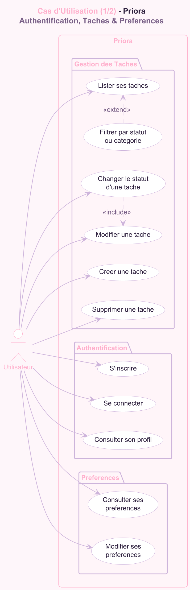
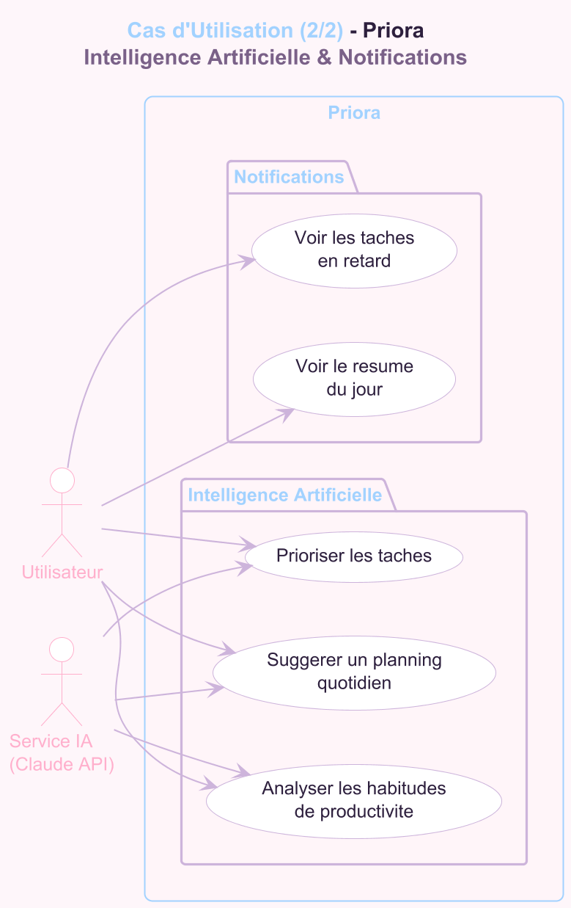
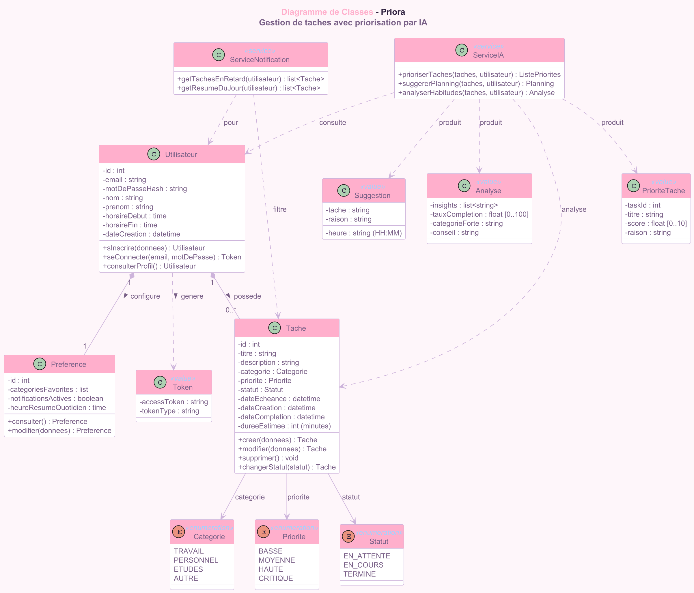

Stack Frontend
 Tailwind CSS
Tailwind CSS Framer Motion
Zustand Store
"L'Intelligence Artificielle au service du Focus."
Lead Fullstack Architect
Orchestration systeme : Architecture SQLAlchemy, Design System shadcn/ui et resilience globale du moteur Priora.
AI & Data Engineer
Ingenierie des prompts Claude, gestion de la fenetre de contexte et algorithmes de priorisation Eisenhower.
Senior UI/UX Designer
Design System Tailwind, orchestration des animations Framer Motion et flux de navigation haute-densite.
DevOps & Integration Manager
Gestion de la coherence API, implementation du Defensive Coding et assurance qualite globale du systeme.
Les etudiants et professionnels modernes gerent en moyenne 15 a 25 flux d'informations simultanes.
La Fatigue Decisionnelle reduit la productivite reelle de 40%.
La To-Do list classique est une passoire. Elle accumule sans trier.
Le temps alloue a la priorisation est souvent superieur au temps d'execution.
Absence de contexte : l'outil ne connait pas vos horaires ni vos capacites.
Une UI pensee pour eliminer les distractions et forcer la concentration sur une seule tache.
Claude API integre au coeur du systeme pour analyser, trier et planifier proactivement.
Couleur Primaire
Couleur IA
L'IA ne classe pas seulement par date, mais par impact systemique. Une tache importante pour un projet d'examen passera avant une tache urgente mais triviale.
Attribution d'un score dynamique calcule par Claude API en fonction de parametres contextuels.
"L'IA connait vos horaires de travail et vos habitudes de productivite. Elle injecte les taches prioritaires dans les creneaux ou vous etes le plus performant."
Tailwind CSS
PostgreSQL comme base de donnees relationnelle.
Mapping objet-relationnel
Migrations automatiques
Relations complexes



Tokens signes pour une securite maximale sans partage de session.
Algorithme a cout adaptatif pour la protection contre les attaques par force brute.
# Instructions Systeme Claude
## Role : Elite Productivity Assistant
## Contexte : ${JSON.stringify(tasks)}
## Regle : Repondre uniquement en JSON structure.
## Objectif : Calculer le score Eisenhower base sur l'impact metier vs urgence chronologique."Passer du langage naturel a la donnee structuree de maniere deterministe."
Conflits de migrations et relations bidirectionnelles entre les modeles SQLAlchemy.
# Utilisation d'Alembic avec auto-generation
alembic revision --autogenerate -m "add categories"
alembic upgrade headLe frontend React crashait car il iterait sur des reponses API erronees.
// Implementation du garde-fou
const data = await res.json();
setTasks(Array.isArray(data) ? data : []); // Protection vitaleValidation des donnees
Monitoring des requetes
Securite des endpoints
Maitrise du cycle de vie des composants React et de l'orchestration des modeles SQLAlchemy.
Coordination d'une equipe technique sous stress et resolution collective de bugs bloquants.
Cloud Migration (Supabase)
Mobile Native App
AI Shared Templates
Questions & Discussion